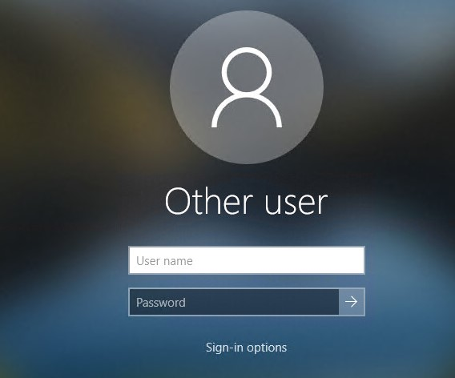
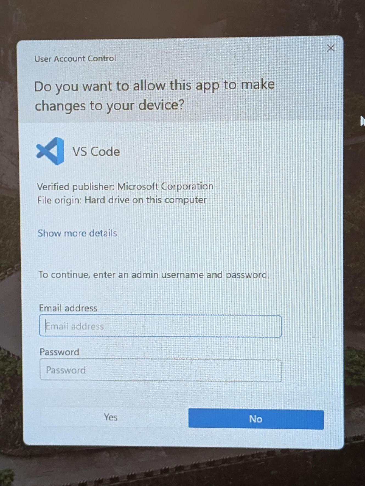
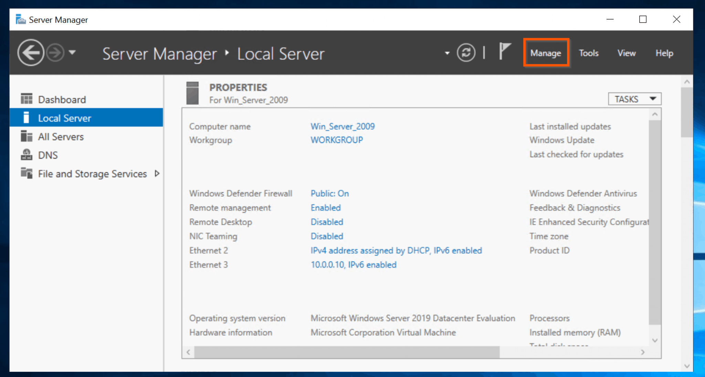

What I did
Firstly, I installed windows 10 on a new virtual machine and configure a windows server.
I configured the network connection to bridge mode so that devices could see each other. Then I made a windows server and configured an active directory. When I was installing the windows server, I had to select both active directory domain services and a DNS server. I then had to create an admin password, which if forgotten you would have to redo the whole installation process again. I created a user which was only allowed to do certain things and wasn't allowed to run as administrator.
I had to enter the original administrator password for the user because they did not have permission. After this I granted the user permission so they could access it independently. I managed to do this semi-independantly with a small amount of guidance.

I then had made an user which is limited in which the user had access too like for example the user had no access to run apps as run as administrator if they tried it would come up like this

Then i accessed the user which i created and made sure that the user has a username to sign into the domain i made
